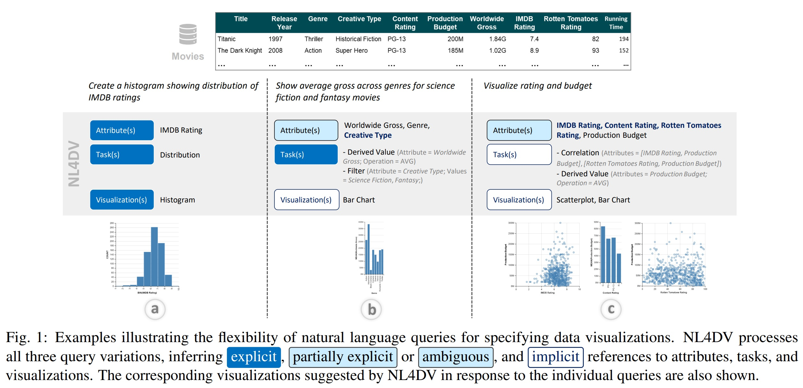

Study of NL4DV
Narechania, A., Srinivasan, A., & Stasko, J. (2021). Nl4dv: A toolkit for generating analytic specifications for data visualization from natural language queries. IEEE Transactions on Visualization and Computer Graphics, 27(2), 369–379. https://doi.org/10.1109/tvcg.2020.3030378
Natural Language Interface (NLIs) is useful in visual data analysis, and Natural language interfaces for visualization are becoming popular in both academic research and commercial software. However, just like the miscommunication between human beings, the Ambiguity of natural language make the implemention of NLIs for data visualization becomes more challenging. For developers, especially visualization developers without experience in natural language processing technology, they need to spend much time to learning and implementing different NLP techniques.
In this paper, the authors present NL4DV, a python package for data visualization driven by natural language. It takes a tabular dataset and a natural language query about the dataset as input, and it returns an analytic specification modeled as a JSON object containing data attributes, analytic tasks, and a list of Vega-Lite specifications relevant to the input query. It could help visualization developers who may not have NLP background to create new visualization NLIs or incorporate natural language input into existing systems.
The Design Goals of NL4DV is:
- DG1. Minimize NLP learning curve.
- DG2. Generate modularized output and support integration with existing system components.
- DG3. Highlight inference type and ambiguity.
- DG4. Support adding aliases and overriding toolkit defaults.

The dataset will be initialized with the attribute types: Quantitative, Nominal, Ordinal and Temporal. If there are some errors, developers can change the types by using other helper functions
The main part of the NL4DV is Query Interpretation, which include:
- Query Parsing.
- Attribute Inference.
- Task Inference.
- Visualization Generation.
NL4DV currently does not support follow-up queries, they plan to add the follow-up queries by using additional dialog parameter. Also, they try to improve query interpretation and enable additional query types, such as question answering. Moreover, They want to provide the option for developers to replace NL4DV’s heuristic modules with contemporary ML models/techniques in the future.